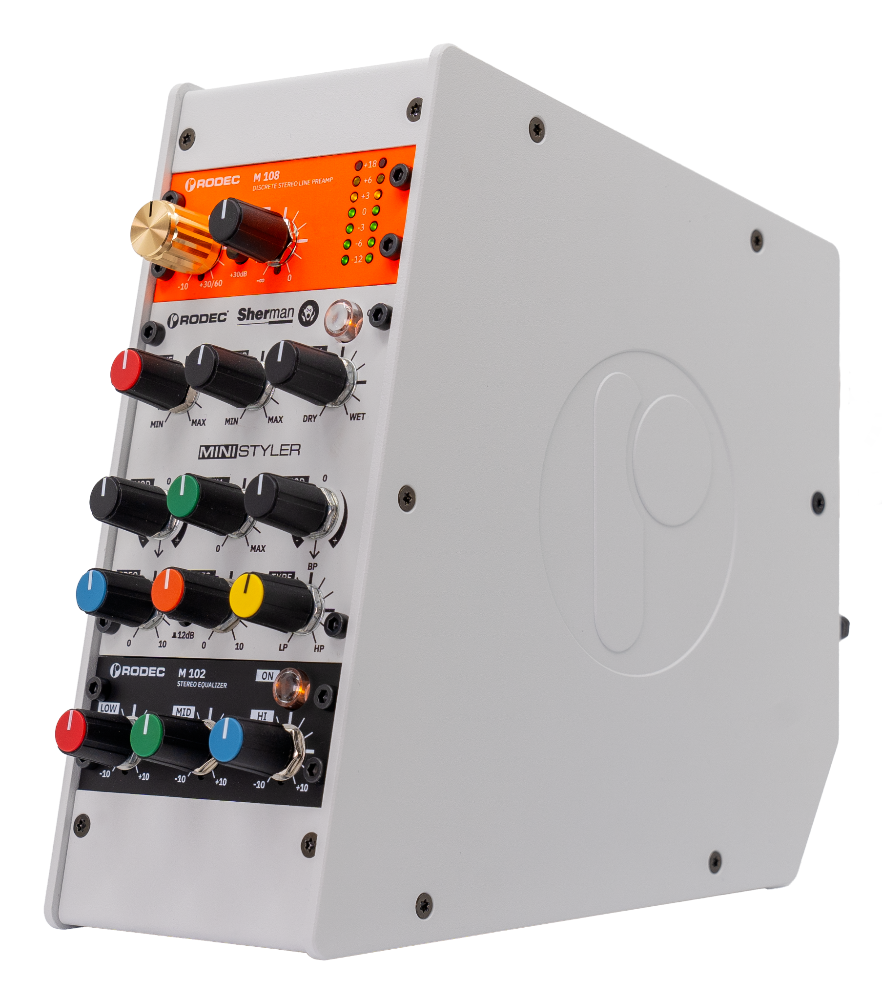

Rodec ONE
The Rodec ONE is a compact modular chassis designed to host Rodec 100 series modules. It offers a flexible platform for creative processing, tracking, and performance, with 28HP of horizontal space to accommodate a wide range of module combinations — from compact 6HP preamps, to mid-sized 10HP dynamic filters, up to larger processors such as the 16HP MiniStyler. Built with stability in mind, the chassis provides ample and clean power, ensuring reliable operation even with the most demanding analog designs.
Beyond its modular flexibility, the Rodec ONE delivers excellent connectivity. The back panel includes balanced TRS stereo inputs and outputs, RCA inputs with a ground connector for phono use, stereo sidechain, two CV inputs, dedicated MIDI sync, and a robust DC power inlet with power switch. This combination of modular freedom and professional I/O makes the Rodec ONE a powerful hub for building custom analog signal chains — equally at home in the studio or on stage.